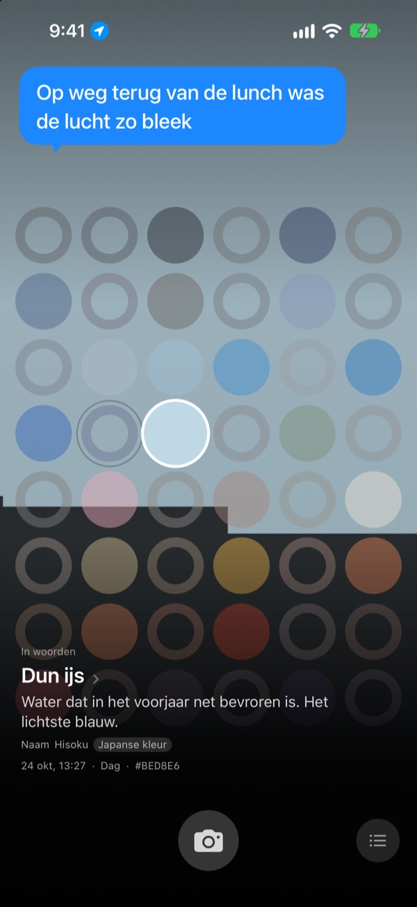
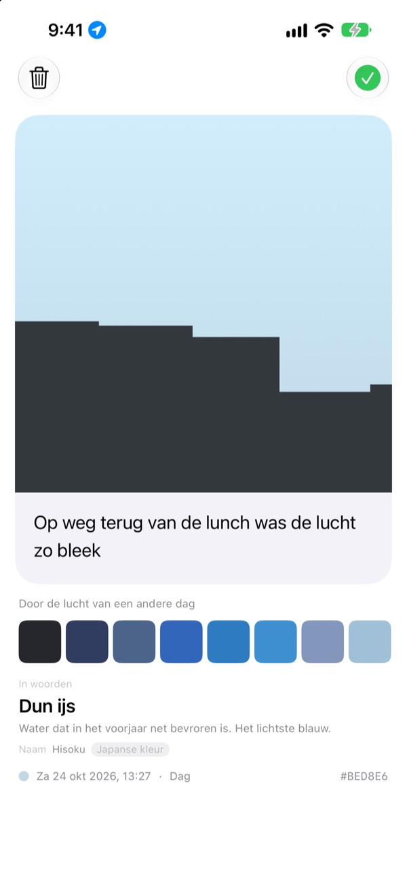
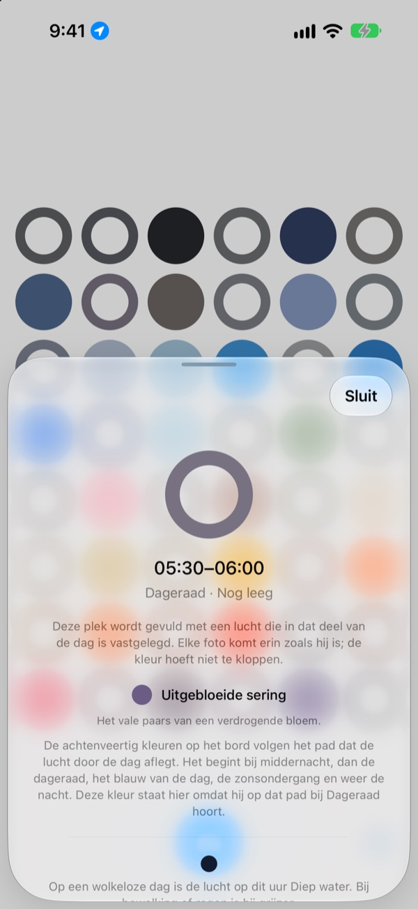
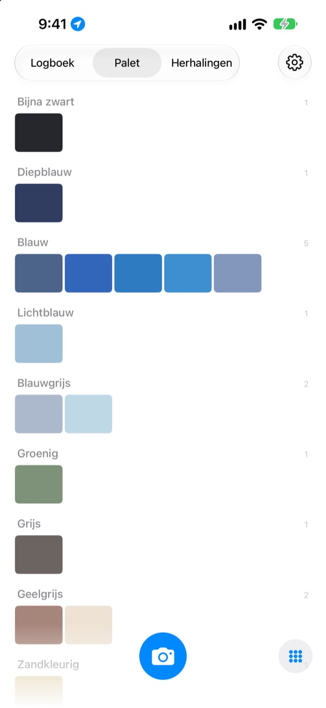

Welke kleur had
de lucht vandaag?
Fotografeer de lucht, en op een bord van achtenveertig vakjes vult het vakje van dat moment zich met de kleur die je vastlegde. Het krijgt ook een naam die je meteen voor je ziet, zoals Dun ijs, Zwembadtegel of Rijpe kaki.
Gratis. Geen account, niet inloggen.

Probeer het bord
Tik op een vakje om te zien bij welk moment van de dag het hoort. Voeg een foto van de lucht toe om het vakje van nu te vullen, en spoel daarna een paar dagen door om te zien hoe het bord verandert.
Je kijkt elke dag naar de lucht, maar geen kleur blijft hangen
De lucht op weg naar je werk, de lucht toen je na de lunch naar buiten liep: 's avonds weet je niet meer welke kleur ze hadden. De luchtfoto's die je wel maakte, raken ondergesneeuwd tussen al je andere foto's. SkyDex verzamelt ze als kleuren en legt de weg die de lucht vandaag aflegde op één bord.
Elke lucht krijgt een naam
Elke kleur krijgt eerst een naam die je voor je ziet, zoals Dun ijs, Zwembadtegel of Rijpe kaki. Daaronder volgt een naam met een herkomst: een traditionele Koreaanse of Japanse kleur, een pigment of een webkleur.
Ligt de kleur dichtbij, dan staat er Naam. Zo niet, dan staat er eerlijk Dichtstbijzijnde naam.

Laat een regel achter
Meteen na de foto gaat een kaart open. Schrijf op wat je dacht toen je omhoogkeek, en het zweeft weer boven de lucht zodra je op dat vakje op het bord tikt.
Je kunt ook de kleur van de lucht van een andere dag over deze foto leggen en het resultaat als afbeelding delen.

Lege vakjes wijzen de weg
Tik op een leeg vakje en je ziet bij welk moment van de dag het hoort en naar welke kleur je kunt uitkijken. Het vertelt ook hoe de lucht er op dat uur uitziet op een wolkeloze dag, afgestemd op zonsopgang en zonsondergang waar jij bent.
De kleur hoeft niet te kloppen. Het grijs van een bewolkte dag is ook de luchtkleur van die dag.

Logboek, palet, herhalingen
Blader op volgorde door je luchten en verzamel je kleuren in paletten per familie, zoals blauw, grijs en zandkleurig. Fotografeer hetzelfde uur op een andere dag en de twee staan naast elkaar.
Widgets op je beginscherm laten in één oogopslag het bord van vandaag en de lucht van vandaag zien.

Beginnen kost drie stappen
- 1
Kijk omhoog
Tik op de cameraknop onder het bord en laat de lucht het vierkant vullen.
- 2
Een vakje vult zich
Het vakje van nu krijgt de kleur die je vastlegde, en een naam.
- 3
Laat een regel achter
Schrijf op de kaart die opengaat wat je bij die lucht dacht.
Zo verdeelt het bord de dag
- Middernacht · 00:00–05:00
- zes vakjes
- Dageraad · 05:00–08:00
- zes vakjes
- Dag · 08:00–16:00
- twaalf vakjes
- Late middag · 16:00–18:00
- zes vakjes
- Zonsondergang · 18:00–21:00
- twaalf vakjes, één per 15 minuten
- Nacht · 21:00–24:00
- zes vakjes
Rond zonsondergang, als de lucht snel verandert, liggen de vakjes dicht op elkaar. Midden in de nacht, als hij nauwelijks verandert, zijn ze ruim. Bovenaan staat middernacht, en naar beneden loopt de dag verder.
Veelgestelde vragen
Hoe raakt een vakje gevuld?
Een lucht die je vandaag fotografeert, vult het vakje van het tijdstip waarop je hem vastlegde, ook als de kleur anders uitvalt dan je dacht. Zo zag de lucht er op dat uur nu eenmaal uit. Luchten van eerdere dagen gaan erin op kleur: ligt er een dicht genoeg bij de kleur van een vakje, dan vult hij dat vakje, en elke lucht vult maar één vakje.
Een vakje dat gisteren vol was, is vandaag leeg.
Het bord is altijd vandaag. Een vakje dat een lucht van gisteren op tijdstip vulde, wordt na de dagwissel alleen nog op kleur gekoppeld. Daarom is het bord de ene dag bijna vol en ziet het er de andere dag leeg uit. Je foto's zijn niet weg: elke lucht staat in het Logboek, en op kleurvolgorde in het Palet.
Mijn gevulde vakjes vervagen.
Dat is met opzet. Een foto houdt een week lang zijn echte kleur en vervaagt daarna langzaam over de volgende acht weken. Hij wordt niet gewist en verdwijnt nooit helemaal. Fotografeer de lucht op dat tijdstip opnieuw en het vakje heeft meteen weer volle kleur. Er is geen reeks die kan breken en geen score om terug te winnen.
Moet de kleur kloppen?
Nee. Er is geen geslaagd of gezakt. Elke foto wordt bewaard, en het grijs van een bewolkte dag is ook de luchtkleur van die dag.
Waarom vraagt de app om mijn locatie?
Alleen om je, als je op een leeg vakje tikt, te laten zien hoe een wolkeloze lucht er op dat uur uitziet, afgestemd op zonsopgang en zonsondergang waar jij bent. De app gebruikt alleen een globale locatie, op de kilometer nauwkeurig, en coördinaten worden nooit aan je foto's gehangen. Weiger je, dan werkt alles gewoon, met Seoul als uitgangspunt.
Kan ik een lucht uit mijn fotobibliotheek toevoegen?
Ja. Een lucht die je in Foto's kiest in plaats van met de camera, wordt ook vierkant bijgesneden en vult het vakje van nu, net als een die je ter plekke fotografeert.
Hoe wis ik een foto?
Open de foto en tik op Wis, of veeg hem in het Logboek naar links. Hij verdwijnt tegelijk van je apparaat en uit iCloud. Verwijder je de app, dan blijft de kopie in iCloud staan en komen je luchten terug als je hem opnieuw installeert.
Wat gebeurt er als ik een ander apparaat neem?
Je luchten staan in je eigen iCloud en gaan mee naar een nieuw apparaat met hetzelfde Apple Account. Er is geen account en geen server, en je foto's en kleuren worden nooit naar de ontwikkelaar gestuurd. Geen advertenties, geen tracking.
Is het echt gratis?
Ja, alle functies zijn gratis. Vind je de app fijn, dan kun je de ontwikkelaar in de app een fooi geven, maar een fooi ontgrendelt niets.
Op welke apparaten werkt het?
Op iPhone met iOS 17.0 of later, alleen staand.
Bugs, vreemd gedrag of iets wat je kwijt wilt: schrijf naar leeo@kakao.com. Vertel erbij wat je aan het doen was en welke iOS-versie je hebt, dan is het probleem veel makkelijker te vinden.